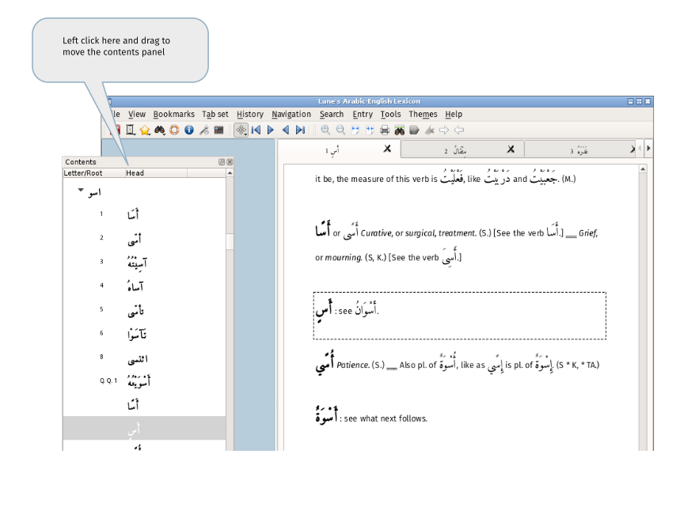
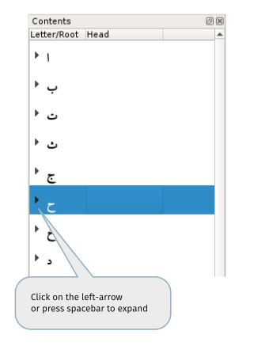

Contents
The contents panel is, by default, to the left. It can be moved by left-clicking on the title bar and dragging:

It can be left undocked or docked to the right. (To dock on the right, drag the panel to beyond the right edge of the screen and then move it to the left until the docking area becomes available as shown by the change of colour (as seen above).
The contents and the currently viewed entry can be made to be behave independently or set so that any movement in one is reflected in the other. This behaviour, linked vs not linked, can be set by clicking on the icon in the status bar:

Irrespective of whether the contents and the entry are linked, single-clicking an the arrow to the left of a letter or a root, will expand to show the roots or the root derivatives respectively. (Pressing spacebar has the same effect.)

An "expand" arrow will only be visible to the left of a root if it is being, or has been, displayed in the current session. When a root is selected, pressing spacebar will expand the root without loading it. A 'selected' root has a blue blackground.
To move between roots with the keyboard, use the up/down arrows or the 'w' and 's' keys. To expand/contract a root use the spacebar or the 'x' key. (By default, see contents options).
To switch focus between contents and entry using the keyboard there are two shortcuts : to focus on the contents Ctrl+M,C , Ctrl+M,T to focus on the roots.
Entry
Double-click on a root to load the root and all of its derivatives into the current tab. Holding the shift or control key while clicking will load the root into a new tab.
To load a root using the keyboard, press return when one if its children is selected.
When a tab has loaded, the current item is shown with a dashed border, as below. This will be the root or one of its children, depending on which was double-clicked.

Use the scrollbar or the up/down keys to move around without changing the current item.
The default keys 'i' (move up) and 'k' (move down) change the view and the current item. Use the 'h' key to return to the original or 'home' item. The 'm' key changes the current item to the home item and can be used as a temporary bookark. (The keys are set in the entry options.)
When moving using the i/k keys, what happens at the first and last entries for the root depends on the setting for 'off page movement': when this is set (the default), movement continues onto the next/previous entry in the lexicon. To prevent this behaviour, turn this setting off in the entry options dialog.